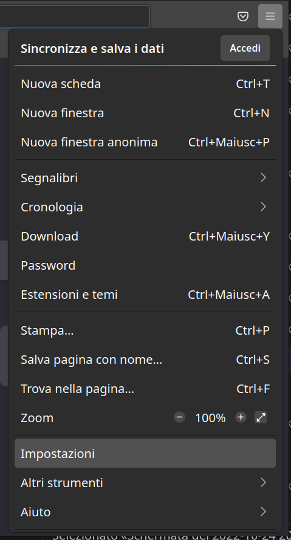
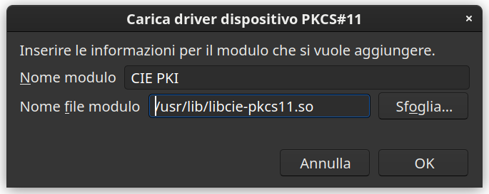

Come usare Cie ID
Avvia il browser Firefox per iniziare la configurazione. Clicca sul pulsante
delle impostazioni, in alto a destra, quindi su Impostazioni.

Selezionare la scheda Privacy e Sicurezza nella buca di ricerca e clicca su
Dispositivi di sicurezza.

Clicca su Carica, digita CIE PKI nel campo Nome modulo e seleziona
il file /usr/lib/libcie-pkcs11.so.

Clicca su Apri per confermare la scelta, quindi su OK per confermare il
caricamento del modulo.

Per autenticarti con la CIE, digita l’URL del servizio di tuo interesse e clicca
sul pulsante Entra con CIE.
Quando richiesto, procedi ad effettuare l’abilitazione della tua CIE sul
computer, necessaria solo per il primo utilizzo.
Ti occorrerà il codice
composto da 4 cifre ricevute al momento di presentazione della domanda e altre 4
cifre che ti sono state recapitate a casa insieme alla nuova Carta di Identità
Elettronica.
Ricorda: dopo aver terminato l’abilitazione, ogni volta che ti sarà
richiesto l’inserimento del PIN è necessario inserire solo le ultime 4 cifre del
PIN.
se hai smarrito il PIN.
Terminata l’abilitazione, ti verrà richiesto di scegliere il certificato con cui
accedere al servizio e di inserire la seconda metà del PIN.

Inserito il PIN, clicca su OK o premi INVIO per accedere al servizio.
In caso di difficoltà, contatta il servizio di assistenza per i cittadini
secondo le modalità indicate all’indirizzo
https://www.cartaidentita.interno.gov.it/contatti/.
Se vuoi cambiare il PIN o l’hai dimenticato e intendi cambiarlo (avrai bisogno
del PUK) consulta il manuale del Software CIE per conoscere la procedura.
Il manuale è disponibile all’indirizzo